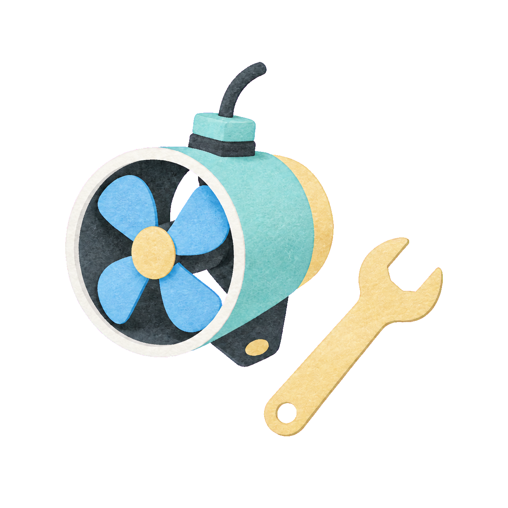
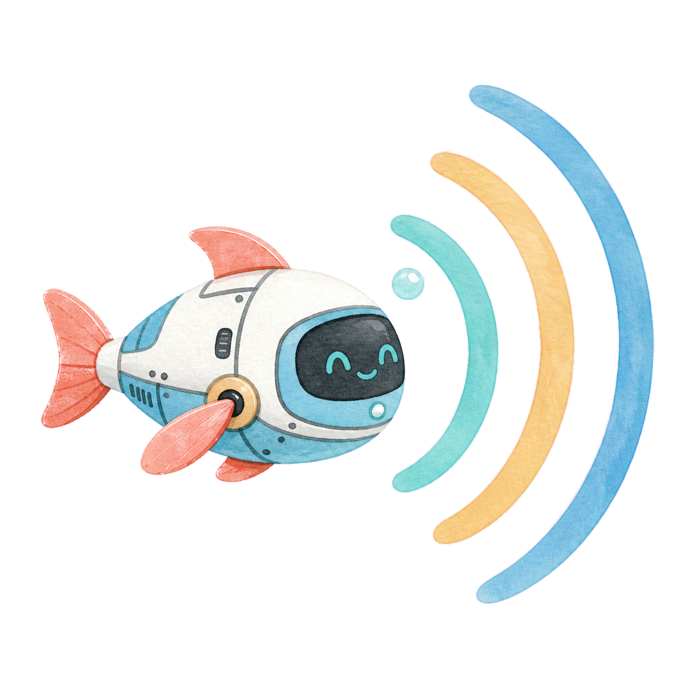
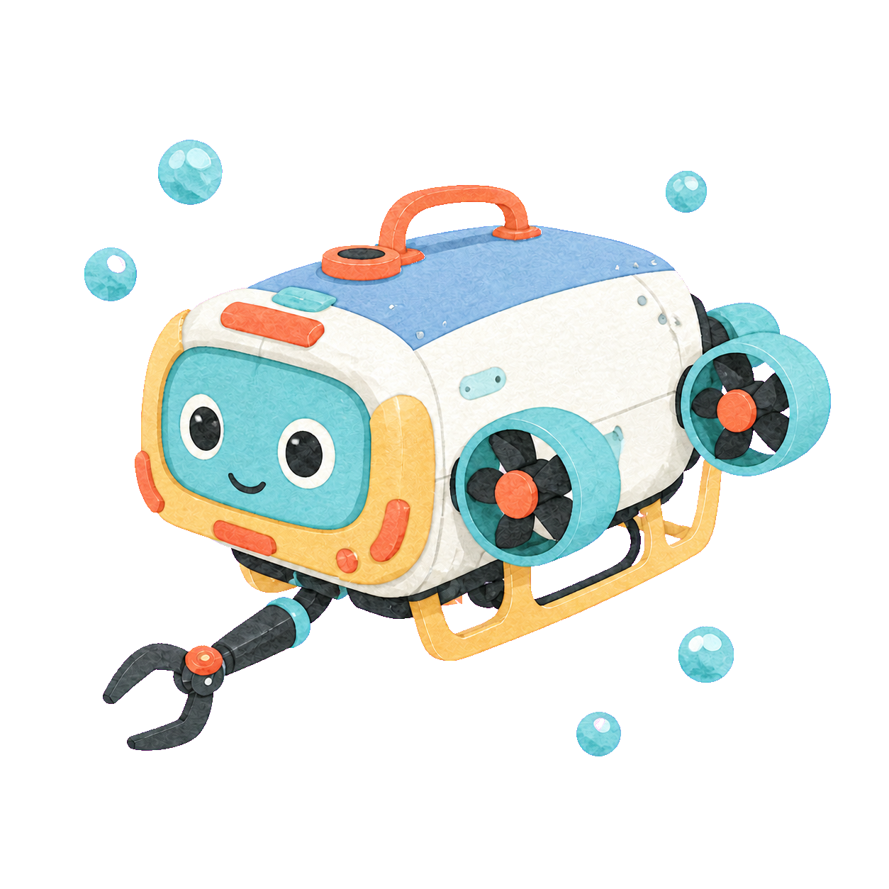

2026 ZJU OCEAN ROBOT · 纳新
把奇思妙想，做成真正下水的机器人
不限年级，不限专业，不要求基础。这里有一条从好奇开始、向真实工程延伸的路。

让机器人真正下水 ↘
浙江大学学生海洋机器人协会成立于 2023 年 12 月，现有成员 120 余人，是一个面向全校学生的学术科技类社团。
我们关心的不只是机器人长什么样，更在意一张图纸怎样变成真实结构、一段代码怎样驱动设备，以及一支队伍怎样把机器人带到水池和赛场。
协会提供覆盖算法、电控与结构的机器人设计内训。从基础知识出发，逐步进入方案设计、硬件连接、控制调试和整机联调。没有基础不是门槛，愿意学习、愿意动手，才是真正的起点。


一台水下机器人，需要机械结构、电子系统、感知算法和控制策略共同工作。协会为成员提供自主工程实践与竞赛机会，让想法不只停留在纸面。
从需求分析到比赛复盘，你会经历一件真实作品被完整做出来的过程。奖项是结果，工程能力与队友默契才是留在手里的东西。
只要你对智能硬件、具身智能、电子信息、自动化控制、机械设计或嵌入式开发中的任一方向感兴趣，都欢迎加入。你可以从第一节内训开始，也可以直接加入适合自己的项目方向。
